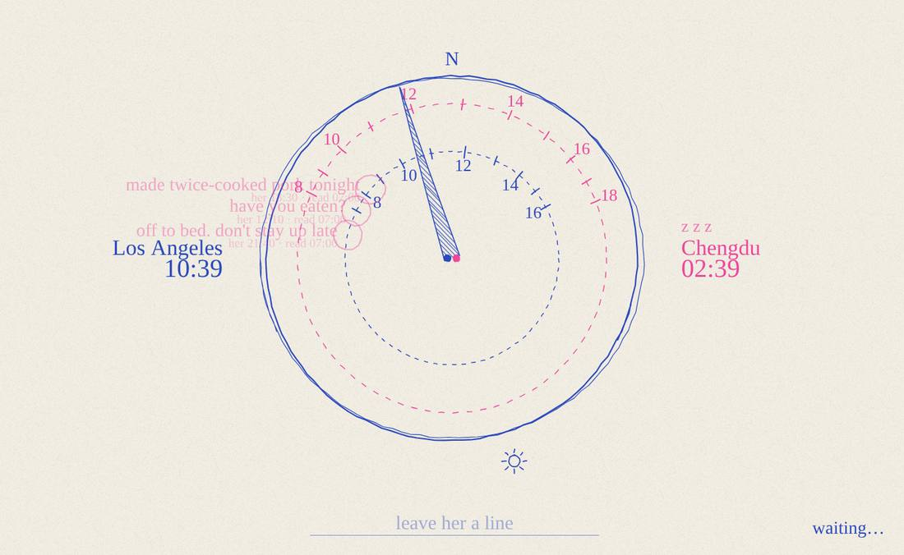
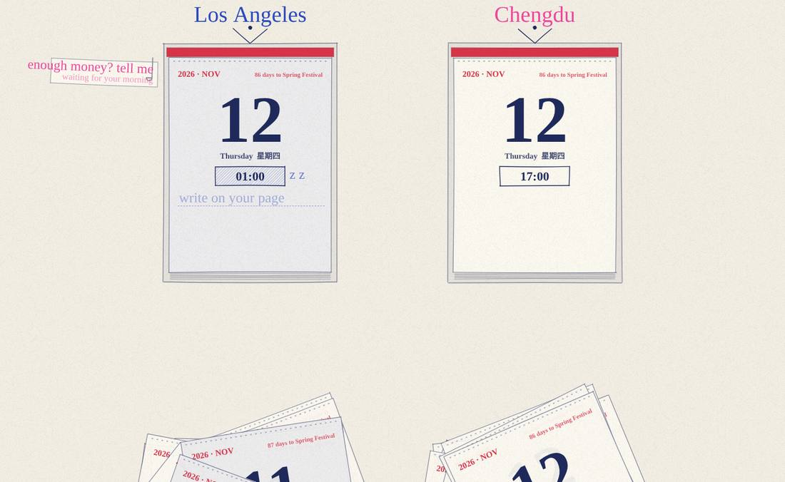
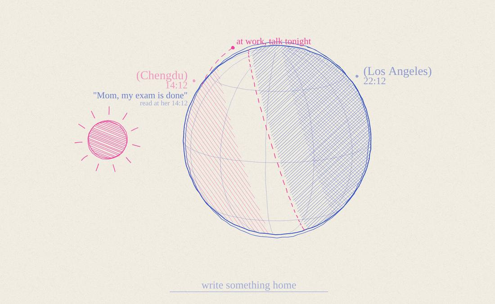
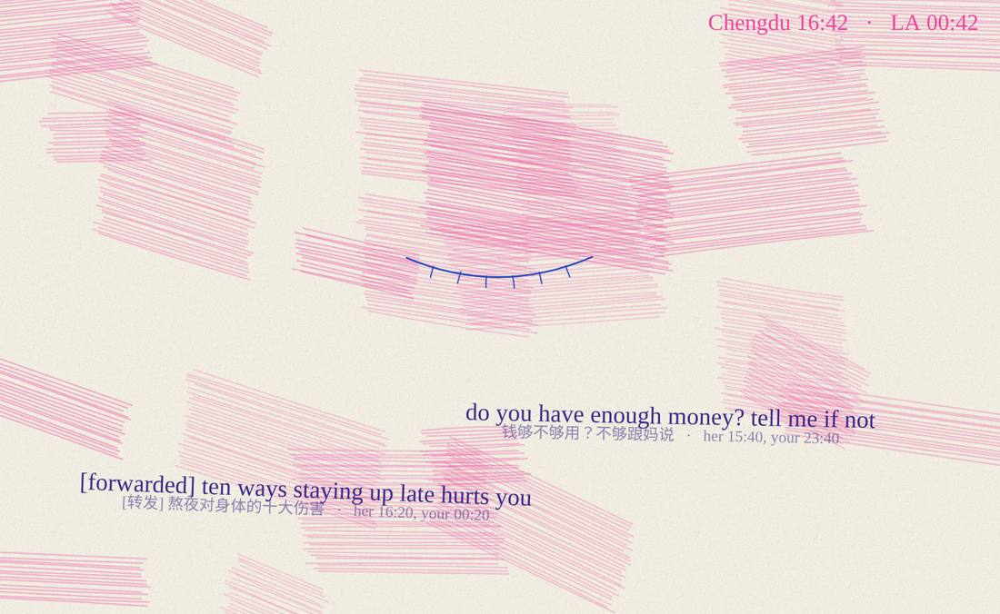
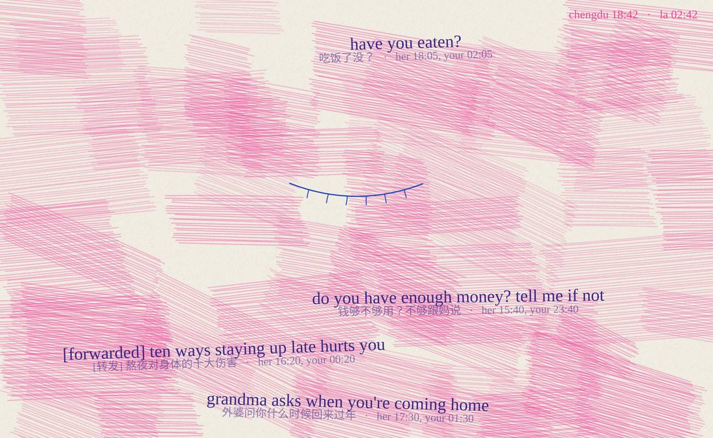
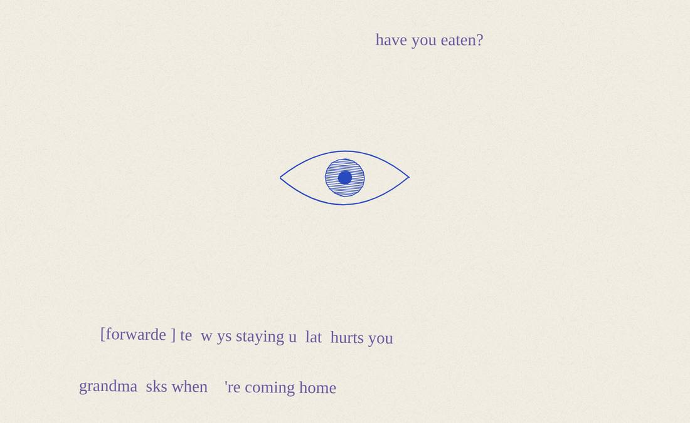
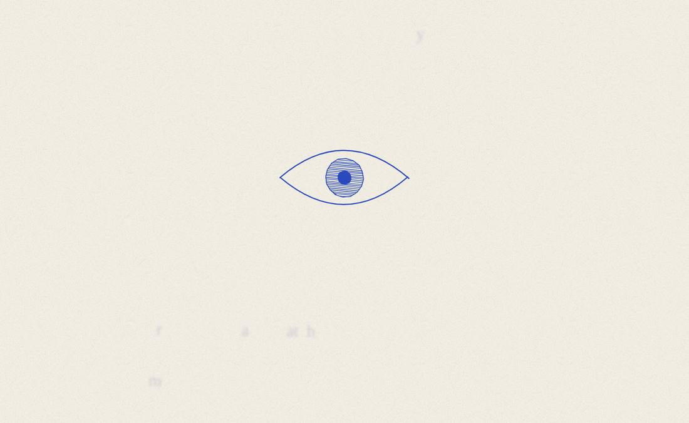
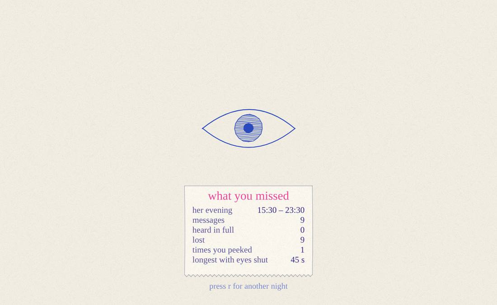

unnatural transformation · part 2 · process
Messages That Arrive When You're Not Looking
my mom's evening only plays while your eyes are closed. open them and the words fall apart before you can read them.
play it →what I meant to translate
the time difference between LA and Chengdu: sixteen hours, two clocks that never line up.
what I actually made
a piece about not being there. her day happens while I sleep. care arrives at the wrong time, and I only ever see what's left of it.
01three ideas, two of them failed
I started with a two-gnomon sundial. it was too hard to understand. then a tear-off calendar: easy to get, but boring. it only worked once it became a game with a goal and a way to fail.


what changed it: playing them myself, and getting bored.
02"too AI"
the first versions were dark blue with glowing lines, then a clean riso poster look. both looked generated. I asked for hand-drawn lines, paper, almost no words. the text that stayed is handwritten, because messages from home are notes, not interfaces.


where I show up: my taste. I couldn't explain it at first, I just kept saying "too AI".
03mom doesn't ask "have you eaten?" at dawn
in one version mom asked if I'd eaten at 6am my time. I knew right away it was wrong. real messages are written for her time of day. fixing that became the whole idea: every message shows two clocks.

where I show up: my own memory of these chats.
04"these feel like solutions"
my teacher said the three pieces felt like believable apps for messaging family, not unnatural transformations. so for part 2 I made the closed-eyes piece less useful:
- open your eyes and the last messages are still there, losing letters as they fade
- a sentence cut off by peeking is never read again
- the longer you keep your eyes shut, the slower and quieter her voice gets, like a dream
- at the end you get a receipt of what you missed, with no content on it



05where the tools took over
- AI coding. I wrote the code with Claude. I chose the source, the three ideas, every change of direction and the look. the first drafts of layout, colours and wording were its defaults, and most of the "too AI" problem came from accepting them.
- speed. with eyes closed the page lagged. to fix it the pink scribbles had to stop moving. I accepted that: still light feels more like eyelids anyway.
- the camera. the claude.ai preview blocks webcams, so the piece only really works on GitHub Pages. the space bar stayed as a fallback.
- her voice. it's the computer's built-in Chinese voice, not my mom's. that's the biggest gap between what I meant and what I made.
06what I still want to find out
when people know the messages only come while they're not looking, do they keep their eyes closed longer? or do they feel the loss of what they missed? the receipt counts peeks and the longest stretch with eyes shut, so I can start to see it.
next: real voice messages from my mom, and a version where the screen faces the room, not the listener.